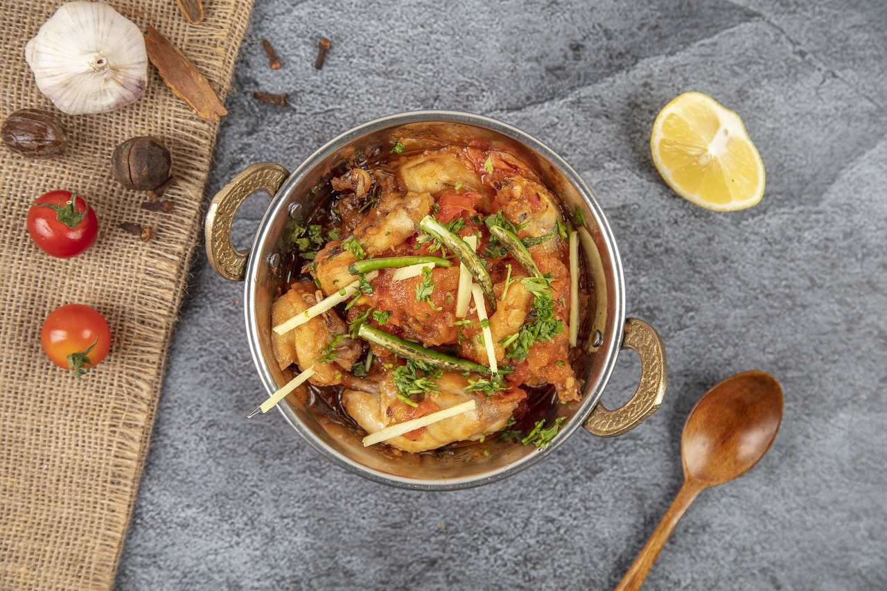

CHICKEN KARAHI

CHICKEN KARAHI
Karahi Gosht, either lamb or mutton or chicken is Pakistani traditional curry with tomato-based gravy and is made in a narrow-based wok. Indian spell it as Kadhai where letter 'dh' gives the sound of the letter 'R' with the round mouth.
INGREDIANTS
- 1/2 kilograms mutton
- 2 tomato
- 14 large green chilli
- 3 medium onion
- 4 tablespoon refined oil
- 1 bunch coriander leaves
- 1 tablespoon ginger paste
STEPS
- PBoil meat with 2 cups of water and ginger and garlic paste on a medium flame.
- Heat oil in a wok and put in onions. Fry till golden and then add tomatoes.
- Now add 1 tsp salt, 1 and 1/2 tsp red chili powder, 1/2 tsp turmeric powder, 1 tsp coriander powder.
- Add the meat, fry for 20 minutes on high flame till water from tomatoes dries and a little gravy is left.